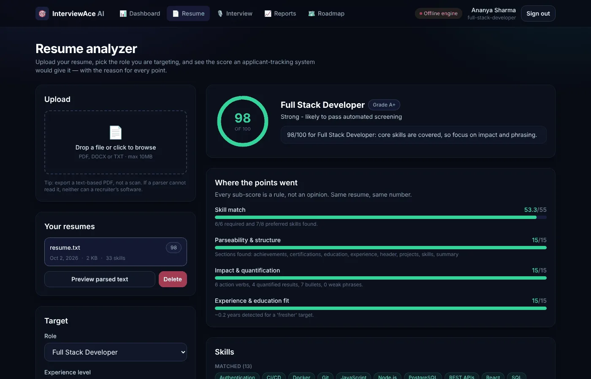
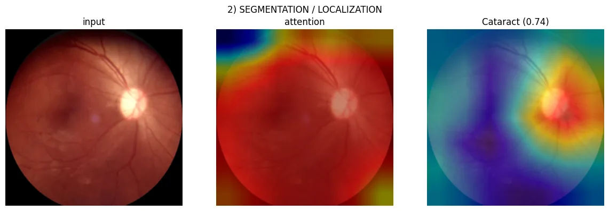

AI / ML engineering · Coimbatore, India
Sai Reddy Annem
I build AI systems that keep working when the data doesn't cooperate — missing sensors, imbalanced labels, noisy live feeds — and I ship them with tests, a one-command launcher, and an honest list of what's still broken.
Third-year B.Tech, Computer Science & Engineering (AI), Amrita Vishwa Vidyapeetham · graduating 2028. Currently building VoxAgent, a multilingual AI phone receptionist for Indian small businesses.
Checking build status on GitHub…
sai@portfolio: ~
6public repos, CI green on every one
318automated tests across them
2IEEE papers (1 published, 1 in review)
40/40simulated drone landings, 2.9 cm mean error
Selected work
Six projects, each with a figure you can play with. Every number on this page comes from the repository it links to.

Where the 100 points come from — hover a bar
Skill match · 40 — do you have the skills the role asks for
Ablation on a moving pad · 6 seeds each

Now building: VoxAgent
A multilingual AI receptionist for Indian clinics, salons and coaching institutes — answers calls in English, Telugu and Hindi, books appointments, logs every conversation. Private while it's a product; built in stages so each one works before the next starts.
- Stage 1Text receptionist with real auto-booking into Google Sheets
- Stage 2Voice: speech-to-text → the same agent → neural TTS
- Stage 2.5Live, interruptible calls with server-side voice activity detection
- Stage 3Real phone numbers via Twilio, business portal, eval suite
Architecture choices I'd defend in an interview: one llm.py seam so the model provider is swappable; static facts in the prompt and live data only through tool calls — no RAG, because a salon's price list doesn't need retrieval.
Path
From lab assignments to systems with tests.
- Started B.Tech CSE (AI)
C, Python, signal processing, maths for computing.
- First real ML
Job-scheduling simulator, AI demand response, and a Q-learning agent for 4×4 Tic-Tac-Toe that became an IEEE ESCI 2026 paper.
- Research & data work
Hybrid CNN–ViT image forgery detection (IEEE Access, in review); IoT respiratory monitoring; DBMS knowledge portal.
- Started VoxAgent
From a terminal chatbot to real phone calls in under three weeks of commits.
- Systems with tests
Disaster-risk BN, GreenScale Cloud, InterviewAce, polylag, the drone landing simulation and the eye-disease work — each with CI on GitHub.
Stack
Only what I've shipped something with. Hover a tool to see where it was used.
Learning Agent tooling (MCP servers, LangGraph) · prototype-based interpretability · evaluation methodology for small, imbalanced medical datasets.
Research
IEEE ESCI 2026 · co-author
Reinforcement Learning for 4×4 Tic-Tac-Toe: Q-Learning with Tactical Enhancements and Epsilon Decay
doi:10.1109/ESCI68015.2026.11493322 →IEEE Access · co-author · under review
Hybridizing Local and Global Features for Image Forgery Detection Using Hybrid CNN–ViT Transformers